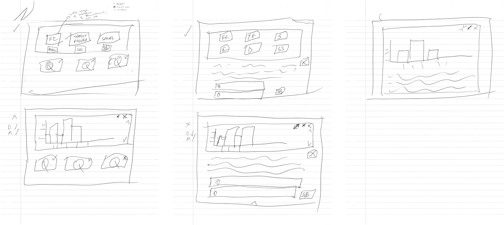
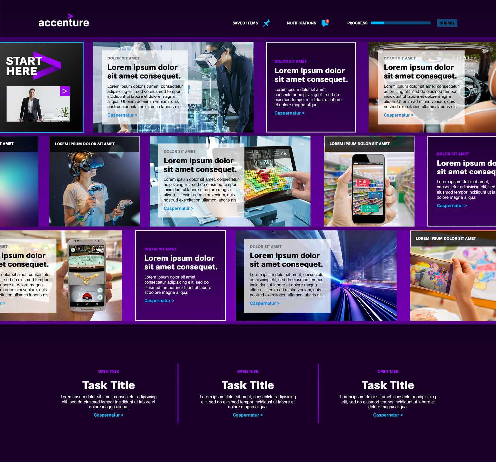
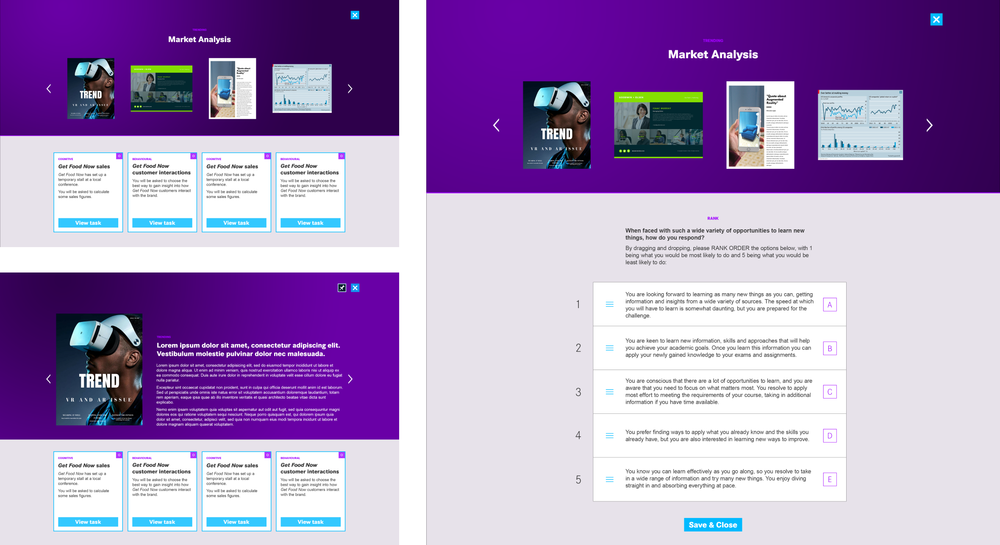
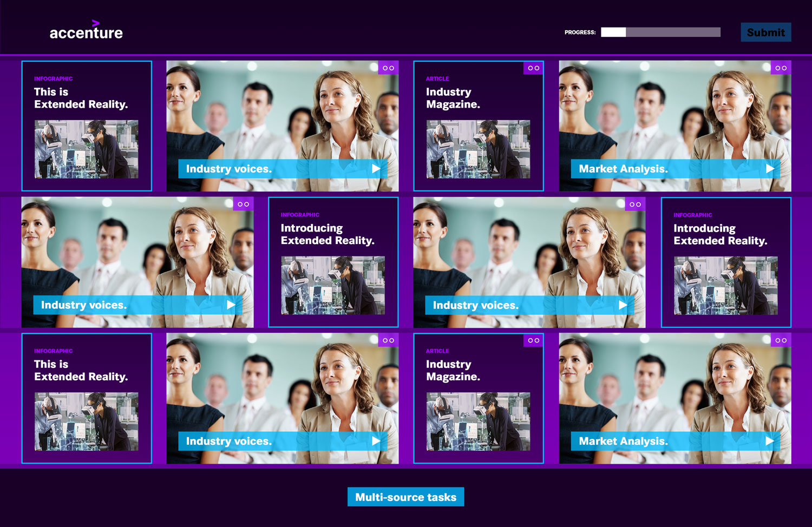
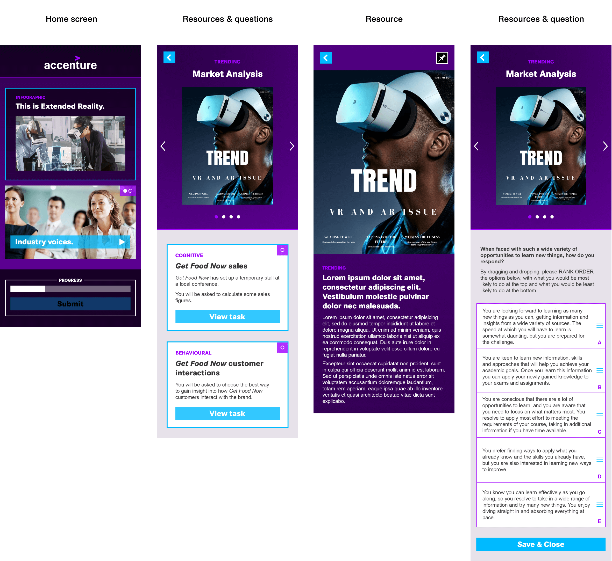
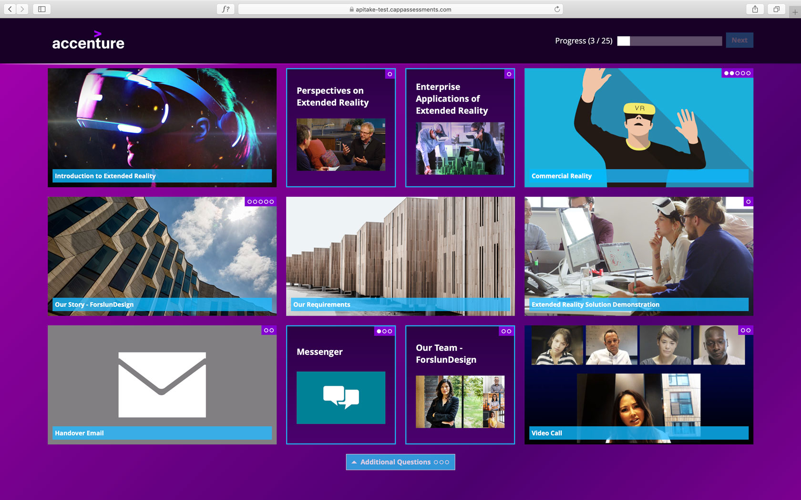
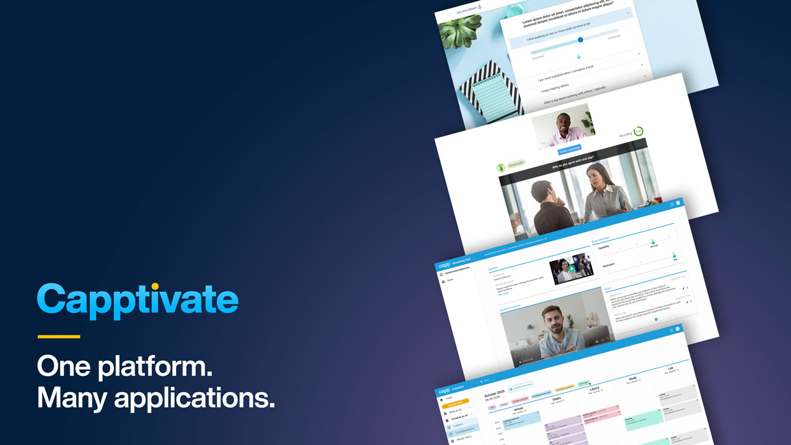

Capptivate is a customisable software-as-a-service assessment product designed to support effective recruitment and career development processes in large organisations. Once configured, it produces immersive branded experiences which assess individuals against predetermined frameworks of strengths as relevant to success at any given organisation.
When I joined the project in May 2018, work was already underway on the new platform. Some design concepts had already been created to give a sense of how client branding could be included in an online assessment experience, but the details of the User Experience were not yet defined. On the strength of the design concepts and the parent company's excellent reputation, two high profile Professional Services clients, Accenture and EY had both signed-up.
With delivery due in the Summer, my challenge was to understand in detail the clients' expectations as well as our internal Engineering capacity and capability, and then develop the design concepts significantly to curate a contemporary, immersive, highly-functional experience.
The engineering team had already started to build some of the internal page infrastructure
I produced high fidelity design mockups for a tile-based home screen as well as the secondary 'in-tile' views showing various assessment stimulus and response mechanisms for both Desktop PCs and Mobile devices.
My initial tile-based home screen concept
Secondary page designs showing stimuli & response interfaces
Finalised home screen framework
Whilst these experiences were initially being produced bespoke for Accenture and EY, as the project progressed a new internal initiative required the builds to be reverse-engineered so that they could be cloned and customised by a content management system.
Mobile optimised design layouts
Screenshot of the final assessment
The projects went live on schedule and won both Accenture and EY several industry awards for best candidate experience. Capptivate is now in use by Sky, NHS, KPMG, GSK, HSBC, Lloyds Banking Group, Deloitte, Aviva, Barclays and many more!
Throughout 2019 and beyond I have recruited additional designers to help expand and enhance the platform, developing further front and back-end features and functionality.
Additional assessment modules, Back-End tools, content management system and more will be featured in a future case study
